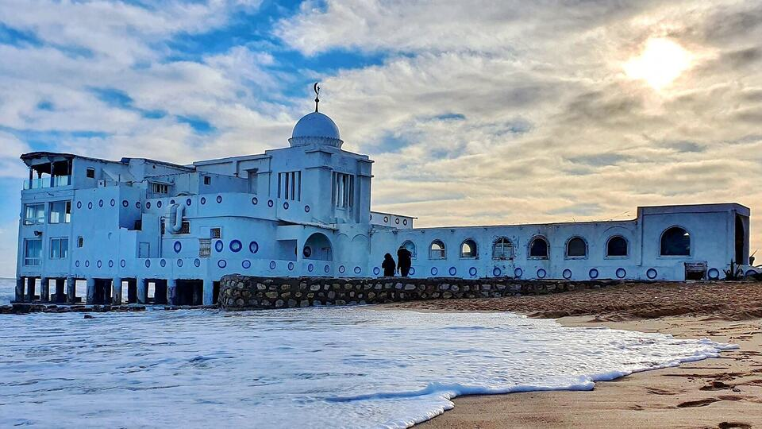
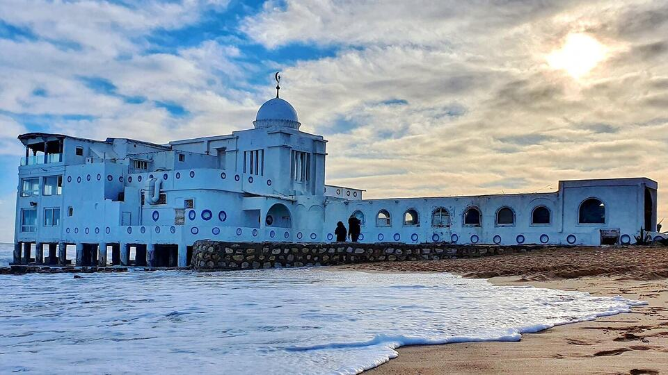

Tunis est la ville la plus peuplée et la capitale de la Tunisie. Elle est aussi le chef-lieu du gouvernorat du même nom depuis sa création en 1956. Située au nord du pays, au fond du golfe de Tunis dont elle est séparée par le lac de Tunis, la cité s'étend sur la plaine côtière et les collines avoisinantes.

L'année 1881, qui est celle de l'instauration du protectorat français, marque un tournant dans l'histoire de Tunis. La cité entre dans une ère de mutations rapides qui la transforment profondément en deux ou trois décennies. Restée pendant des siècles contenue derrière ses fortifications, la ville s'étend donc rapidement : elle se dédouble en une ville ancienne peuplée par la population arabe et une ville nouvelle peuplée par les nouveaux arrivants et différente de par sa structure avec la ville arabe.

Tunis abrite des institutions musicales parmi les plus prestigieuses du pays. La troupe de La Rachidia y est fondée en 1934 pour sauvegarder la musique arabe originale et valoriser particulièrement la musique tunisienne à travers de nouvelles créations inspirées des règles de la musique ifriquienne. Elle se compose de 22 membres (joueurs d'instruments et chorale)


 
